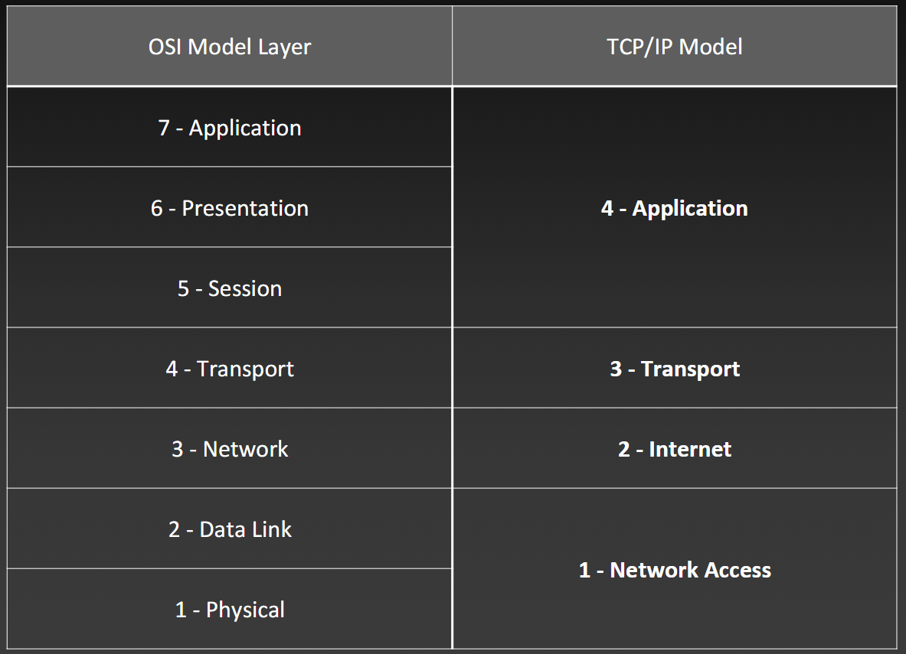

Configure Users using GitBash Commands
Commands
- git config --global user.name "Benjamin Pedrin"
- git config --global user.email "pedrinb@students.westerntc.edu"
- git config --global core.autocrlf true
- git config --global --list
Creating SSH keys
Commands
Command to create a new SSH key
- ssh-keygen -t ed25519 -C "pedrinb@students.westerntc.edu"
Start the agent and add the key
- (Holds key in memory while computer is on)
- eval "$(ssh-agent -s)"
- ssh-add ~/.ssh/id_ed25519
Print & Copy Public Key
- cat ~/.ssh/id_ed25519.pub
Testing your connection
Basic Switch and End Device Configuration
Access Methods
Access Methods
- Console
- Physical management port
- Out-of-Band - refers to access via a cable or dedicated management channel used for maintenance only!
- Cable required
- Telnet
- In-Band - Insecure
- Over Network - used once the IP has been configured
- Requires active networking services on the device
- NOT ENCRYPTED
- Secure Shell (SSH)
1. User EXEC Mode Commands(View-Only)
2. Privileged EXEC Mode Commands
3. Global Config Mode
- Identified with prompt that ends with "(config)#"
- a. **Line Configuration Mode** - used to config console, SSH, Telnet or AUX access
- b. **Interface Configuration Mode** - used to config a switch, port or router network interface
Mode Changes
Modes
- Priveliged EXEC
- Configuration Mode
- configure terminal (config t)
- line console
- line vty
- interfaces
Additional Commands
- no ip domain-lookup
Syntax
Syntax Help

For help in the CLI, enter a question mark ( ? )prompt.
- this is *context sensitive* meaning that the help you get will be determined by where and when you seek the help
Hotkeys & Shortcuts
Hotkeys Cheatsheet

Naming Devices
- When naming a device, enter Privileged EXEC Mode on the device and use hostname or no hostname to change the name or return it to it's original prompt name
Configuring Passwords
Password Commands
Setting Passwords
- console password
- line console 0
- password xT6yR
- login
- end (exit can be used to exit line mode)
- enable password
- config t - (enter configuration mode)
- enable password R7gS0e
- exit - (when ready to exit config mode)
- enable secret
- config t - (enter configuration mode)
- enable secret sEd9o7
- exit - (when ready to exit config mode)
- vty password (Virtual Teletype)
- line vty 0 15
- password x8Hc5ja
- login
- end (to return to enable mode); exit (to return to config mode)
username/password authentication
- Router(config)# username admin secret MyStrongPassword
- Router(config)# line console 0
- Router(config-line)# login local
Do Not Use "enable password" | Use "enable secret"
To clear a password, simply type "NO" before any command
Encryption Commands
Encryption
- service password-encryption
Banner Message
Command
Configurations commands "shortlist"
- show running-config
- show startup-config
- reload
- erase startup-config
- copy running-config startup-config (copy run start)
# Configuring A Virtual Interface
Vlan Config

command: "show ip interface brief"
Reference Models
"All People Seem To Need Data Processing"
OSI Model

TCP/IP Model

Model Comparison
